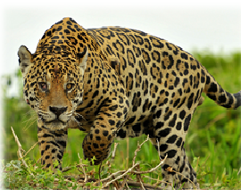

Jaguars are wild cats and vertebrates living in the Americas.
It is one of 4 species of large cats belonging to the leopard along with tigers, lions and leopards from the Old World, and is the only leopard animal living in America.
Jaguars are mainly active at night and live in forests, timber areas and grasslands where they can be safely hidden.
Due to forest destruction and climate change, Jaguar population is generally reducing.